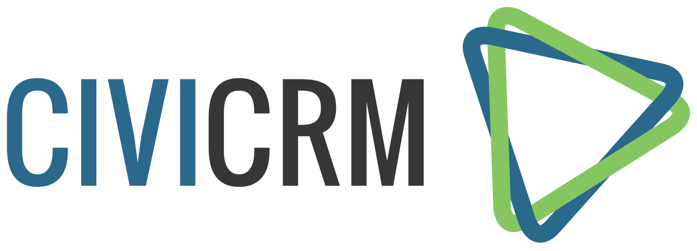

Plone & CiviCRM
A useful combo
Paul Roeland / @polyester
So, what's CiviCRM?

- Constituent Relation Management
- Targeted at nonprofits
- Open source
- In use by many organizations
and Plone?
- I guess you know already ;-)
- Far nicer than the systems CiviCRM tags on to
- but doesn't do the specific tasks that CiviCRM does, out of the box
Why not write your own?
- It's like a rite of passage for the nonprofit tech crowd...
- Write address database in Access
- (or FoxPro if you're ancient. DBase III if you've walked with dinosaurs, like me)
- At some point, convert it into crap PHP
- ... what do you mean, security?
- Then meet python & Plone
Addresses are hard!
- Stupid Americans/French/insert any country but your own
- Wait, you mean more email addresses?
- Newsletter? Oh bother...
Like, real hard
- We're not just talking addresses here
- Memberships
- Activities
- Groups & tags
- Banking
- Donations
- Events (with entrance fees, volunteers, rooms)
- ... wait? You wanna WHAT? Print? Craaaaazy!
You are not special
Ok, a little Oprah here.
Yeah, your organization is really special.
Like, super duper goody special. Snaps to you!
But trust me on this one, your needs in tech aren't
So, integration is the way forward.
Luckily, CiviCRM has a pretty complete API
even with security controls on who gets to see what
The beauty of Opensource
- Meet a Belgian CiviCRM dev at a hackathon, talk through the options
- Talk to a guy in Seattle who did Salesforce integration
- Talk to a Mexican in Brazil, who likes Documentation Driven Development
- Talk to a Bangladeshi trade unionist, who manages to secure funding
- ....
- non-profit!
Thanks, Simples Consultoria!
just a short while later, we have an 1.0a release!
- Oh, and it works with Plone 5 also
collective.civicrm
Where we're at
- searching works, with tags & groups
- relations & activities
- API key per user, so can be read from e.g. LDAP or MariaDB
- pretty fast, in real situations faster than CiviCRM itself
tech babble
- uses gevent to query in parallel
- only API calls, no PHP harmed in the process
- well...
Work in progress
- form to add Activities
- form to add Notes
- maybe fetch more types of information
- Membership might be a great one, to unlock parts of a site
Not happening (for now)
- Integration with PloneFormGen;
using CiviCRM Profiles as Iframe gives better options
- Complicated stuff like mailings
- Adding contacts
- Admin activity
How can you help?
- Your usecases
- Funding
- Testing
- Feature requests & pull requests
- light PHP knowledge...